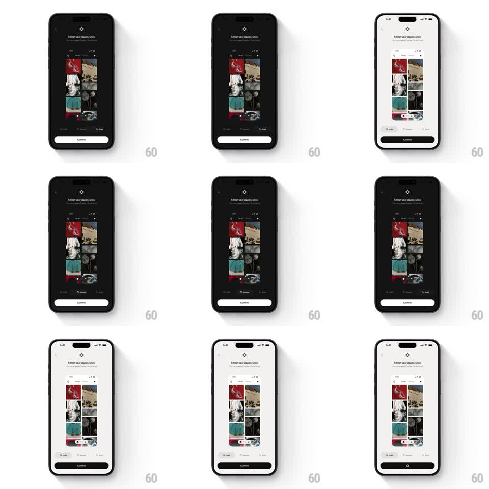

Media
Frame-by-frame

Rebuild this interaction 1:1: Cosmos's appearance picker - tapping Light, System, or Dark flips the entire screen between themes with a wipe that sweeps from the control, preview grid included.

Rebuild this interaction 1:1: Cosmos's appearance picker - tapping Light, System, or Dark flips the entire screen between themes with a wipe that sweeps from the control, preview grid included. ## Integration Integration: stack-agnostic spec - springs given as stiffness/damping, timed motions as duration + curve; map every value to your framework and animation library of choice. ## Scene "Select your appearance" screen with a back arrow and gear icon: a two-column photo-grid preview of the app mid-screen, a Light / System / Dark segmented control under it, and a Confirm button pinned at the bottom. Everything - background, preview chrome, grid cells, controls - exists in both light and dark variants. ## Motion spec Pattern: whole-screen theme wipe driven by the segmented control. - Tap a segment: the new theme wipes across the screen as a diagonal sweep starting from the control (300ms, ease-in-out) - background, text, the preview grid's chrome, and the grid images' tone all flip inside the same moving mask edge. - The selected pill slides its fill under the thumb (200ms, spring ~400/22) leading the wipe by a beat. - The preview grid's photos crossfade to their theme-graded variants with a slight stagger top-to-bottom (40ms per row) inside the wipe. - Confirm stays constant in layout; only its colors flip. ## Calibration - The wipe edge is a clean diagonal line, not a blur - you can watch the theme boundary travel. - System mode animates to whichever theme the OS reports, with the same wipe. ## Reduced motion Whole-screen crossfade (200ms); no directional wipe. ## Don't miss - The preview grid is a live miniature of the app, not a static image - its tab bar and cards flip theme too. - The wipe passes over the status bar last; status bar icons switch style at the end of the sweep.